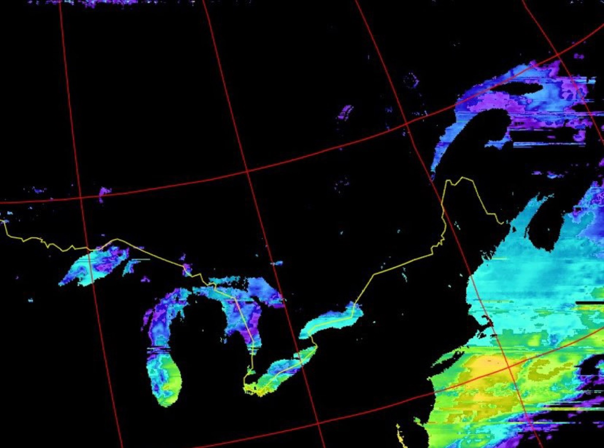
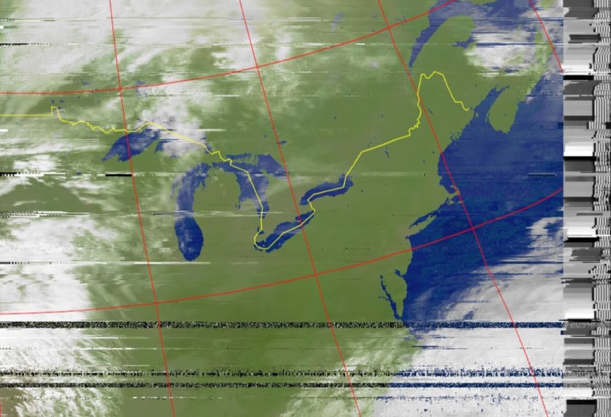
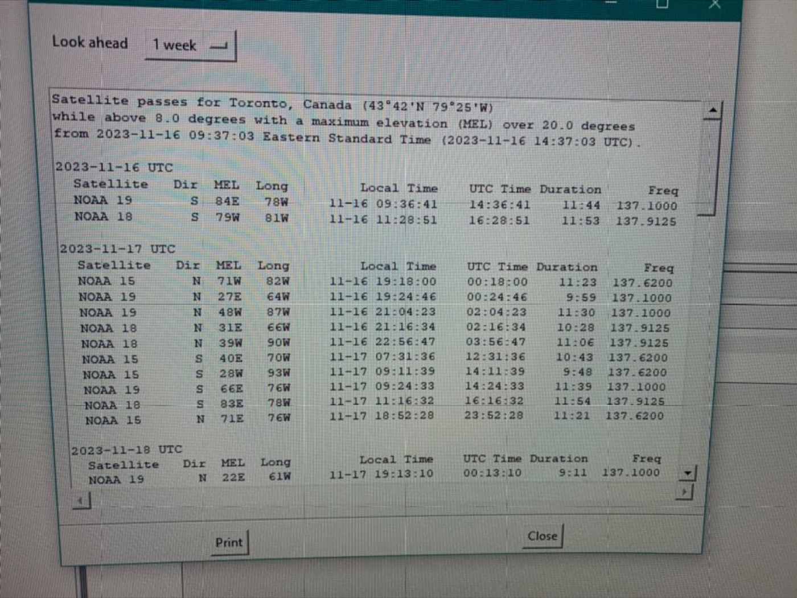

A weekend project with a friend, receiving live weather images broadcast from NOAA polar-orbiting satellites with a homemade antenna and an SDR receiver.
Personal project
NOAA's polar-orbiting weather satellites (NOAA 15, 18 and 19) continuously broadcast their Automatic Picture Transmission (APT) signal at around 137 MHz as they pass overhead, and it can be picked up with an antenna, an SDR receiver, and free decoding software, no professional ground station required. A friend suggested it as a quick weekend project, and it turned into this.
Reception is a timing problem before it is anything else. A satellite is only usable for a few minutes while it is above the horizon, so the pass had to be predicted in advance, elevation, azimuth, duration and frequency, and the antenna pointed and the receiver running before the window opened.
Two decoded passes, same region, different channel processing
Both images are from passes over the Great Lakes and northeastern seaboard, decoded from the live APT signal, not downloaded from NOAA after the fact.



Antenna and receiver build photos to be added.